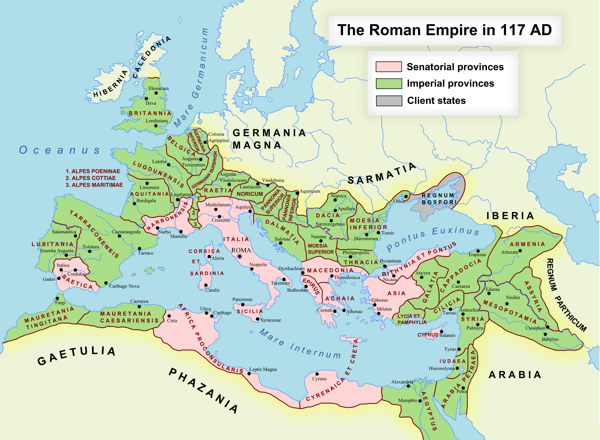

753 P.N.E. – 476 N.E. • OD SELA DO CARSTVA
Rim je počeo kao malo selo na sedam brežuljaka uz Tibar i završio kao carstvo koje je obuhvatalo ceo Mediteran — od Škotske do Mesopotomije. Trajao je toliko dugo da su Rimljani u svom padu zaboravili šta je bio njihov uspon. Pravo, inženjering, vojska, pravo, administracija, jezik — sve što je Evropa gradila posle pada Rima, gradila je na rimskim temeljima. Mi i danas živimo u gradu koji su Rimljani zamislili.

Rimsko carstvo u svom vrhuncu (~117 n.e.) — od Britanije do Mesopotamije • Wikimedia Commons